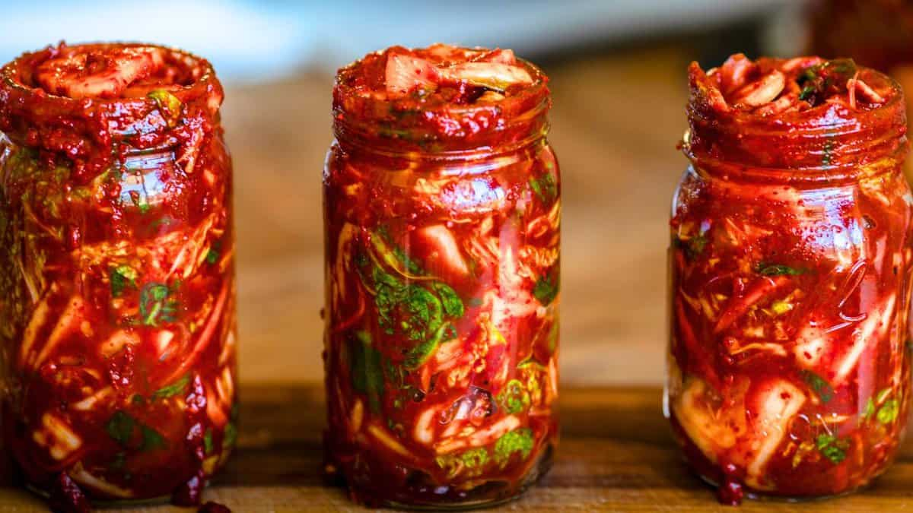

Kimchi

Kimchi is also a main ingredient for many Korean dishes such as kimchi stew, kimchi pancake, kimchi fried rice, and kimchi dumplings. It is also enjoyed on its own as a side dish.
Ingredients
- 1 medium napa cabbage
- 1/4 cup sea salt
- 1/2 cup water
- 1 tablespoon grated garlic (5 to 6 cloves)
- 1 teaspoon grated ginger
- 1 teaspoon sugar
- 2 to 3 tablespoons seafood flavor or water
- 1 to 5 tablespoons Korean red pepper flakes
- 8 ounces Korean radish or daikon, peeled and cut into matchsticks
- 4 scallions, trimmed and cut into 1-inch pieces
Instructions
- Cut the cabbage: Cut the cabbage lengthwise in half, then crosswise into 2-inch pieces, discarding the root end. Place in a large bowl, sprinkle with the salt, and toss with your hands until the cabbage is coated. Add enough water to cover the cabbage. Put a plate on top and weigh it down with something heavy, like a jar or can of beans. Let stand for 1 to 2 hours.
- Rinse and drain the cabbage: Rinse the cabbage under cold water 3 times and drain in a colander for 15 to 20 minutes. Rinse and dry the bowl you used for salting, and set it aside to use in step 3.
- Make the paste: Meanwhile, combine the garlic, ginger, sugar, and seafood flavor in a small bowl and mix to form a smooth paste. Mix in the red pepper flakes.
- Combine the vegetables and paste: Gently squeeze any remaining water from the cabbage and return it to the bowl along with the radish, scallions, and seasoning paste.
- Massage the paste into the vegetables: Using your hands, gently work the paste into the vegetables until they are thoroughly coated. The gloves are optional here but highly recommended to protect your hands from stings, stains, and smells!
- Pack the kimchi into the jar: Pack the kimchi into the jar, pressing down on it until the brine rises to cover the vegetables. Leave at least 1 inch of headspace. Seal the jar with the lid.
- Let it ferment: Let the jar stand at room temperature for 1 to 5 days. You may see bubbles inside the jar and brine may seep out of the lid; place a bowl or plate under the jar to help catch any overflow.
- Check it daily and refrigerate when ready: Check the kimchi once a day, pressing down on the vegetables with a clean finger or spoon to keep them submerged under the brine. (This also releases gases produced during fermentation.) Taste a little at this point, too! When the kimchi tastes ripe enough for your liking, transfer the jar to the refrigerator. You may eat it right away, but it's best after another week or two.